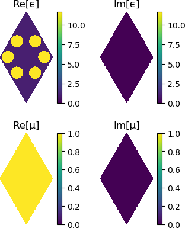

How to load a crystal from the Zoo
Namespaces
The Peacock.Zoo module contains functions to generate some of the photonic crystals that I have studied. To avoid polluting the global namespace, these functions are only accessible after calling using Peacock.Zoo, or by calling each function as Peacock.Zoo.name.
Unpacking parameters
Each make_* function returns a NamedTuple containing the geometry, solver, polarisation, and high symmetry $k$-points of the crystal. You can use the @unpack macro from the Parameters module to extract the variables held in the NamedTuple.
For example, the topological photonic crystal first introduced by Wu et al 2015 can be generated using make_wu_topo.
using Parameters # for the `@unpack` macro
# Load photonic topological insulator from Wu et al 2015
@unpack geometry, solver, polarisation, G, K, M = make_wu_topo(fourier_space_cutoff)
# Preview the crystal
plot(geometry)
Available crystals
Peacock.Zoo.make_dePaz — Methodmake_dePaz(d1::Real, d2::Real, cutoff::Int; R::Real=1/3)Reproduces "Engineering fragile topology in photonic crystals: Topological quantum chemistry of light", Blanco de Paz et al, 2019
Returns a NamedTuple of geometry, solver, polarisation, and the G, M, K high-symmetry points.
Peacock.Zoo.make_dePaz_OAL — Methodmake_dePaz_OAL(cutoff::Int)Reproduces the obstructed atomic limit (d1=0.4, d2=0.61) crystal from "Engineering fragile topology in photonic crystals: Topological quantum chemistry of light", Blanco de Paz et al, 2019
Returns a NamedTuple of geometry, solver, polarisation, and the G, M, K high-symmetry points.
Peacock.Zoo.make_dePaz_frag — Methodmake_dePaz_frag(cutoff::Int)Reproduces the trivial (d1=0.4, d2=0.13) crystal from "Engineering fragile topology in photonic crystals: Topological quantum chemistry of light", Blanco de Paz et al, 2019
Returns a NamedTuple of geometry, solver, polarisation, and the G, M, K high-symmetry points.
Peacock.Zoo.make_dePaz_triv — Methodmake_dePaz_triv(cutoff::Int)Reproduces the trivial (d1=0.52, d2=0.31) crystal from "Engineering fragile topology in photonic crystals: Topological quantum chemistry of light", Blanco de Paz et al, 2019
Returns a NamedTuple of geometry, solver, polarisation, and the G, M, K high-symmetry points.
Peacock.Zoo.make_wu — Methodmake_wu(a0_div_R, cutoff)Reproduces "Scheme for Achieving a Topological Photonic Crystal by Using Dielectric Material", Wu et al, 2015.
Returns a NamedTuple of geometry, solver, polarisation, and the G, M, K high-symmetry points.
Peacock.Zoo.make_wu_primitive — Methodmake_wu_primitive(cutoff)Reproduces the primitive unit cell of "Scheme for Achieving a Topological Photonic Crystal by Using Dielectric Material", Wu et al, 2015
Returns a NamedTuple of geometry, solver, polarisation, and the G, M, K high-symmetry points.
Peacock.Zoo.make_wu_topo — Methodmake_wu_topo(cutoff::Int)Reproduces the topological crystal (a0_div_R=2.9) from "Scheme for Achieving a Topological Photonic Crystal by Using Dielectric Material", Wu et al, 2015.
Returns a NamedTuple of geometry, solver, polarisation, and the G, M, K high-symmetry points.
Peacock.Zoo.make_wu_triv — Methodmake_wu_topo(cutoff::Int)Reproduces the trivial crystal (a0divR=3.125)from "Scheme for Achieving a Topological Photonic Crystal by Using Dielectric Material", Wu et al, 2015.
Returns a NamedTuple of geometry, solver, polarisation, and the G, M, K high-symmetry points.
Peacock.Zoo.make_xu — Methodmake_xu(r1, r2, cutoff; wedges=[(0,360)])Reproduces "Accidental degeneracy in photonic bands and topological phase transitions in two-dimensional core-shell dielectric photonic crystals", Xu et al, 2016.
The rings can be split using wedges = [(start,stop), (start,stop)...].
Returns a NamedTuple of geometry, solver, polarisation, and the G, M, K high-symmetry points.
Peacock.Zoo.make_zhu — Methodmake_zhu(r, l, cutoff; angles=[60n for n in 0:5])Reproduces "Topological transitions in continuously deformed photonic crystals" Zhu et al, 2018.
ris the radius of the cylindrical air holes.lis the radius of the hexagonal ring that the air holes form
Note that 'l' in Zhu et al is the same as 'R' in wu_ep.
Returns a NamedTuple of geometry, solver, polarisation, and the G, M, K high-symmetry points.